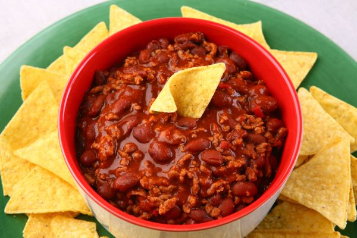

CHILLI ORIGINAL
Bem Apimemtado

Ingredientes
- 1/2 Kg de carne moída
- 1/2 Kg de feijão cozido sem caldo - mistura dos tipos: rajado, rosinha e carioquinha
- 1 pimentão verde pequeno cortado em cubos
- 1 pimentão vermelho pequeno em cubos
- 1 (um) pimentão verde picado
- 1 (um) pimentão vermelho picado
- 1 cebola média cortada em cubinhos
- 3 dentes de alho amassados
- 4 colheres de sopa de óleo de soja
- 1 cubo de tempero pronto sabor carne
- 1 litro de água fervente
- Cominho a gosto
- Sal a gosto
- Molho de pimenta a gosto
Preparo
- Em panela grande doure a cebola, alho e óleo.
- Acrescente a carne moída.
- Sempre mexendo, refogue por 3 a 4 minutos.
- Adicione os temperos: cubo de tempero pronto, cominho e molho de pimenta. Experimente, se ao seu gosto adicione mais sal.
- Acrescente os tomates e pimentões e refogue por mais alguns minutos.
- Por último, acrescente os feijões e a água fervente.
- Tampe a panela e deixe cozinhar por aproximadamente 20 minutes, sempre verificando para que os feijões não fiquem muito cozidos.
- Este prato originalmente não é acompanhado, mas após experimentar este acompanhamento oferecido por um restaurante de rede Norte-Americano, achei uma delícia e somente preparo com o acompanhamento a seguir:
- Misture um pouco do iogurte natural e creme de leite para obter um saber semelhante ao "sour cream" (creme azedo).
- Sirva o chilli bem quente em uma cumbuca de sopa.
- Salpique a mussarela ralada.
- Utilize o creme azedo e as tortillas como um acompanhamento originalmente Norte-Americano!